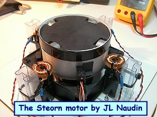

Cliquez ici pour la version FRANCAISE 
The new Steorn magnetic motor shown on december 15, 2009 by Sean McCarthy in Dublin is composed by a rotor equiped with neodymium magnets and a stator which contains toroidal coils with a ferrite core. The rotor magnets are attracted by the ferromagnetic material of the torus, so the magnetic potential energy is converted into kinetic energy of rotation. The ferrite will be magnetically polarized and will be temporarily transformed into a magnet of opposite polarity to that of the rotor magnet. So there is attraction but when the magnet is closest to the ferrite it is locked by the magnetic force and enable to exit. When the magnetic potential energy is minimal and when the kinetic energy is maximum (the nearest point of the magnet closest to the torus), a depolarization pulse is sent through the toroidal coils changing the orientation of magnetic domains (Weiss domains) of the ferrite, which frees the magnets. I recall that there is no magnetic
field outside a toroidal coil, it is commonly compared to
a coil of infinite length. There is no direct interaction
of the magnetic field of the torus with the magnetic
field of the rotor magnets. The magnetic field of the toroidal coil is used only to depolarize
temporarily the magnetization of the ferrite core. Thus,
the magnetic force of attraction of the rotor becomes
unbalanced (symmetry is broken), the magnetic
potential energy during approach of the rotor magnet is
less than the potential magnetic energy during the exit
phase. This is therefore the purpose of "magnetic regauging" fully
explained by Tom Bearden. |
From the informations published on the Internet by Steorn, I have decided to reproduce this magnetic motor and, firstly, to check the observations and measurements presented in the video of December 15, 2009 by Sean McCarthy in Dublin.
The experiments proposed here and their explanations are only based on my personnal interpretation only of the Orbo working principle presented to the public through videos and photos by Sean McCarthy in Dublin and may be differ from the official Steorn explanations. These experiments presented here are the tests results of all my researches about the Orbo device from Steorn.

The previous
Hall effect probe used to trigger the coils has been replaced by
an optical sensor with black shutters for a better tuning.

Technical specifications of one toroïdal
coil:
Ferromagnetic core (grade 3E25) specific inductance Al=3820
(23x14x7 mm)
wound CW with 7.5 m of 4/10 mm copper wire
Max inductance = 235 mH (far from the magnet)
Min inductance = 58.6 mH (close to the magnet)
Coil resistance = 1.4 ohms
Magnets specifications:
4 x 2 NdFeB magnets (Bremag 27)
of 27 MGoe (208 kJ/m3) polarisation N-S outward.
Magnet size: diameter 22 mm, 10 mm thick
Rotor specifications:
Plastic cylinder: outer
diameter = 100 mm, height = 50 mm
3 mm gap beetwen the rotor and the stator coils
Power supply: 10 V DC with 220 mA at 750 RPM

The latest
model V3 is currently under test. This new design is more closer
to the original demo rig version presented on dec 15, 2009 in
Dublin by Steorn....
TEST 1: Shorting two toroïdal stator coils
In this test only the two toroïdal stator coils 1 and 3 are used to power the motor. The RPM is measured with an optical tachometer and the motor is only lighted with a DC battery powered halogen lamp while all the AC lights are switched off in the lab. At full and stable speed ( 690 RPM ), the stator coils 2 and 4 connected in series are shorted and the change of RPM is measured.

TEST RESULTS: At a full and stable RPM, when the toroïdal stator coils 2 and 4 are shorted with the switch, there is NO CHANGE in the RPM of the motor. Shorting the toroïdal stator coils has no mesurable effect on the RPM of the Steorn motor.


Below the video of the test
TEST 2: Stator coils INDUCTANCE Vs ANGULAR POSITION of the rotor magnet
The purpose of this experiment is to measure the variation of the inductance of the toroïdal coils of the Steorn motor V3 Vs the angular position of the rotor magnet. The inductance is measured with an inductancemeter Voltcraft LCR 9063 each 5° from 0° to 180°. The four toroïdal coils are connected in series.
Technical specifications of one toroïdal
coil:
Ferromagnetic core
(grade 3E25) specific inductance Al=3820 (23x14x7 mm)
wound CW with 7.5 m of 4/10 mm copper wire
Magnets specifications:
4 x 2 NdFeB magnets (Bremag 27)
of 27 MGoe (208 kJ/m3) polarisation N-S outward.
Magnet size: diameter 22 mm, 10 mm thick


The total
resistance of the four toroïdal coils connected in series is 4.5
ohms
Below the full video of the experiment :

Click here to see the full datasheet of the
core material used in this test

On the diagram above the position of the
toroidal stator coils and the magnets and the areas where the
coils are powered are clearly showed.
TEST RESULTS: You will notice in the diagram above that, in this replication of the Steorn motor V3, the inductance of the toroïdal stator coils drops drammaticaly from 963 mH to 190 mH while the magnets approach to the coils. This inductance changing effect has been fully demonstrated by Sean McCarthy on his Orbo motor during his show "Cop>1" in Dublin on January 12, 2010...
TEST 3: Canceling the Back EMF in the toroïdal stator coils, How To ?
The purpose of this experiment is to demonstrate that Back EMF can be induced in the toroïdal stator coils when the coils are above and below the neutral magnetic line of the rotating magnets. You will notice that there is a very precise position where Back EMF is fully canceled.
To conduct this experiment, I have used my working replication of the Steorn motor V3 with its four toroïdal stator coils. I have added a fifth toroïdal coil as a Back EMF probe. This coil is able to move along a path parallel to the axis of the rotating magnets and above or below the neutral magnetic line. The rotor contains 4 pairs of NdFeB magnets with their North and South poles outwards (the magnet with the North pole outward on the top and the magnet with the South pole outward on the bottom).


TEST RESULTS: This simple experiment confirms that, when the toroïdal coils are placed above or below the neutral magnetic line of the rotor, Back EMF can be measured. This experiment confirms also that there is a very precise position where the Back EMF can be fully canceled, this can be done when the toroïdal stator coils are placed exactly in line with the neutral magnetic line of the rotating magnets.
Below, you will find the full video of this experiment :
TEST 4: Successful generation of the Orbo pulses in the Steorn V4

Now, my new toroïdal coils
design of the Steorn motor v4 produces the same
shape of the voltage and the current curves
than the original Orbo motor version from Steorn showed by Sean
McCarthy...
You
may notice that the current rises very fast (for the same
inductance value) and the top of the curve is FLAT and
HORIZONTAL....


It is very interesting to observe that the current is constant during 72% of
the pulse while the inductance of the stator coils increases
from 246mH to 916mH...

Parametric Equation of this
system

TEST 5: New measurements after a fine tuning and a mechanical alignement of the toroïdal coils

The pulse has been precisely tuned with the
high power variable resistor and the coils have been finely
aligned on the neutral magnetic line.
The results are now indeniable, look at the current and the power
curves below, the current rises very fast and then the current
curve is very flat and horizontal while the inductance of the
toroïdal stator coils increases. So, no CEMF is produced by the
motion of the rotor, there is no spike in the power calculated in
real time by the high end digital oscilloscope....


Below, you will find a video of the test of the Steorn motor V4.1:

TEST 6: Experiment on Viscous Remanent Magnetization (VRM)
The purpose of this test is to measure the Viscous Remanent Magnetization (VRM) decay of the toroïdal ferromagnetic core used in my Steorn Orbo motor.
When one rotor magnet, freely attracted by the ferromagnetic material of the toroïd, lives the core, the ferromagnetic material of the core remains temporarily magnetized with the opposite polarity of the leaving magne, due to the VRM effect. When the next rotor magnet approaches to this magnetized core, it will be more attracted by this temporarily magnetization during its approach and thus it will get more kinetic energy.

(click
on the picture below to know more)

TEST 7: Loading test with a pickup coil connected to a High Power Leds panel
The purpose of this test is to check the loading effect on the input current of the toroïdal stator coils of the Orbo motor v4. So, a pickup coil has been connected at 45° from the TDC. This pickup coil is a flat air core coil (600 mH) connected to a High Power Leds panel used as load.

The input current through the toroïdal stator coils is measured with an analog ammeter.

TEST RESULTS: At full and stable RPM, if the High Power Leds panel is switched ON, there is no change in the measured current at the input of the toroïdal stator coils.

At full speed, with the LEDs OFF, the measured current through
the toroïdal stator coils is 400 mA.

If the High Power Leds panel is switched ON, the measured current
through the toroïdal stator coils is still 400 mA.
Below, you will find a video of the loading test with the High Power Leds panel with an analog ammeter:

Below, you will find a video of the loading test with the High Power Leds panel with an digital ammeter:
OVERUNITY PROOF ? Successful Orbo replication by Larsko, measured COP = 4.75
Congratulations to Larsko, he has build a very frictionless replication of the Orbo motor. His measurements during the loading test has demonstrated an overunity effect.
See the Lasko measurement datas (feb 26, 2010) below :
The toroid core is a ferrite F-87A-H. permeability is 15000. Each coil has 200 turns of 23 AWG copper wire, 26 ft long. Each coil resistance is 0,5 ohm and the inductance of each coil is around 640 mH. When the motor runs, the total inductance of the 4 coils is between 2300 mH and 2400 mH.
Input power without load : 4 volt *
31mA = 0.124 watt. All the power is heat losses. Turn speed 1551
RPM
Input power with load: 4 volt * 32 mA = 0,128 watt. Input
power increase only to 0,004 watt.... Turn speed 1240 RPM
Output Load on 9 Leds = 7.72 V * 2.99 mA = 0.023 W
Delta Power = 23 mW - 4 mW = 19 mW ---> 19/4 = 4.75 ?
Comments from Jean-Louis Naudin : In the Lasko Orbo replication, it is important to notice that the COP of this device is less than one. The factor 4.75 is NOT A COP or the efficiency of his device. One of the most interesting thing in this good Orbo replication done by Larsko is that while 23 mW of power is collected at its output, only 4 mW is tapped at the input... This is a good example of a non reciproal effect.
Interesting documents :
Technical datasheets :
Patents :
 Comments from
Jean-Louis Naudin: Why this patent, below, is
interesting for the Orbo motor ? Comments from
Jean-Louis Naudin: Why this patent, below, is
interesting for the Orbo motor ?The patent below is very interesting because it says that in a common toroidal coil, each layer is equal to a "one turn coil" whose axis is parallel to the axis of the toroid. So, one layer of toroidal coil is equal to a flat coil of one turn and thus it can tap or produce EMF outside the torus. So, to counter this interference effect, the only thing to do is , for each layer of the toroidal coil, to wound a one turn flat coil along the circumference of the toroid so as to produce a magnetic field which nullify the virtual one turn coil created by each layer of the toroidal coil... This is very simple and a very important thing to do for canceling the weak CEMF induced in the toroid by the motion of the magnet and this is one of the most important key of the Orbo motor... Patent number: US5565835 (click on the picture to read the patent ) SUBSTANTIAL NULLIFICATION OF EXTERNAL MAGNETIC FIELDS AND LORENTZ FORCES REGARDING TOROIDAL INDUCTORS Inventor: Lawrence R. Groehl |
Below, the Steorn motor shown to the public on december 15, 2009 in Dublin
I am not affiliated with Steorn Ltd. Orbo is trademarked by Steorn
 Email : JNaudin509@aol.com
Email : JNaudin509@aol.com
return to the Magnetic motors home page